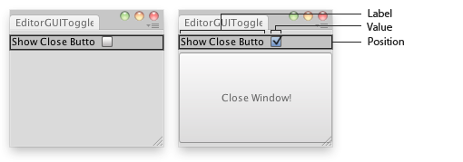

EditorGUI.Toggle
Parameters
| position | Rectangle on the screen to use for the toggle. | |
| label | Optional label in front of the toggle. | |
| value | The shown state of the toggle. | |
| style | Optional GUIStyle. |
Returns
bool The selected state of the toggle.
Description 描述
Makes a toggle.

Toggle control in an Editor Window.
// Use a toggle button to show/hide a button that can close the window. using UnityEngine; using UnityEditor;
class EditorGUIToggle : EditorWindow { bool showClose = true;
[MenuItem("Examples/EditorGUI Toggle usage")] void Init() { EditorGUIToggle window = (EditorGUIToggle)GetWindow(typeof(EditorGUIToggle), true, "My Empty Window"); window.Show(); }
void OnGUI() { showClose = EditorGUI.Toggle(new Rect(0, 5, position.width, 20), "Show Close Button", showClose); if (showClose) if (GUI.Button(new Rect(0, 25, position.width, 100), "Close Window!")) this.Close(); } }